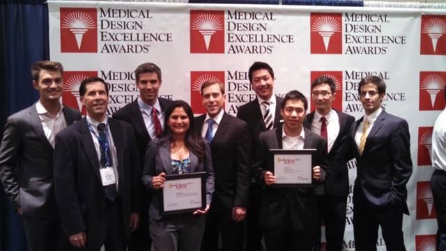

Medtech-focused student competitions can be an excellent source of intellectual property for licensing or purchase by medical device companies. View a list compiled by Jay R. Goldberg and Phil Weilerstein of national student design competitions that emphasize innovative medical devices and technologies.

The 2014 BMEidea competition winners at the MDEA ceremony. Image via NCIIA.
By Jay R. Goldberg and Phil Weilerstein
Originally posted on mddionline.com
National student design competitions that focus on new medical devices and technologies can provide an excellent source of intellectual property for licensing or purchase by medical device companies. Not only do they help focus student energy, enthusiasm, and talent on a real-world problem, but they also provide students with national exposure that can help when seeking employment after graduation and/or possible venture funding for promising new technologies. Competitions allow medical device companies to become familiar with the quality and commercialization potential of student design projects.*
The goals of these competitions vary but often include: providing students with incentives and opportunities to learn about engineering design and teamwork; encouraging designs that address a specific disability or medical condition; and encouraging design innovations and creation of intellectual property of interest to the medical device industry and investment community that could lead to the formation of new business ventures and start-up companies. There are several competitions that encourage the design of new medical devices. Several emphasize entrepreneurship and potential for commercialization and provide cash awards to be used to further develop the winning design concepts. They seek technically feasible, potentially profitable innovative devices and may require a basic business plan or opportunity statement to determine market size, profitability, and potential for commercialization. Each has a different emphasis, unique judging criteria, and unique entry requirements.
An example of one of these competitions is the Biomedical Engineering Innovation, Design, and Entrepreneurship Award (BMEidea) national student design competition, sponsored by the National Collegiate Inventors and Innovators Alliance (NCIIA), an organization that supports technology innovation and entrepreneurship in higher education. Each year, winners of this competition are announced during the Medical Design Excellence Awards (MDEAs) ceremony as part of the MD&M East Conference and Trade Show. The BMEidea competition provides expert evaluation of student projects, and the opportunity to win substantial product development funding and gain exposure to and develop contacts in the medical device industry. Winning entries are required to:
- Demonstrate clinical utility and technical feasibility,
- Meet technical, economic, legal, and regulatory requirements,
- Feature a novel and practical design, and
- Demonstrate potential for commercialization including a market assessment, and proposed regulatory and intellectual property strategies.
To allow disclosure of designs and protect the intellectual property resulting from student projects, teams often submit provisional or full patent applications prior to entering competitions. Most teams are interested in commercializing their new product or technology. Some may be interested in creating startup companies to accomplish this, but many of them are interested in creating license agreements with established medical device companies. One example of a winning competition team taking the licensing route is the REGEN, a device for the local delivery of post-operative analgesia. Developed by a team from Johns Hopkins University, REGEN is a small implantable receptacle that diffuses pain-relieving analgesic directly at the site of a laparoscopic incision. REGEN was the third place winner of the BMEidea competition in 2008. The team licensed the technology to a startup company, Device Evolutions, in 2009.
Companies interested in learning about new medical products and technologies developed by student design teams, finding competition entrants and winners, and exploring opportunities for licensing should first visit the Web site for each competition. Some Web sites include information on past winners and the progress the team has made toward commercialization. For example, details regarding the history of the REGEN project including licensing activity can be found here, and past winners of BMEidea and BMEstart competitions can be found here. Trade publications, such as MD+DI, publish the results of competitions (such as BMEidea) each year and can be a good source of this information. Professional societies and organizations that sponsor student design competitions (ASME, RESNA, IEEE-EMBS, NCIIA, and others) often announce the winners in their journals, newsletters, or Web sites. Finally, interested companies can contact the technology transfer offices at various universities to learn of student-generated IP available for licensing.
National student design competitions that emphasize innovative medical devices and technologies.
What’s Next? 9th Annual AbilityOne Network Design Challenge
NISH
www.nish.org/designchallenge
Encourages development of assistive technologies that can empower people with disabilities to overcome barriers to employment.
CIMIT Prize for Primary Healthcare
Center for Integration of Medicine and Innovative Technology
www.cimit.org/print/grants-cimitprize.html
Seeks ideas for technological innovations with great potential to support and catalyze improved delivery of healthcare at the frontlines of medicine.
Student Design Competition
Rehabilitation Engineering and Assistive Technology Society of North America
www.resna.org
Seeks creative and innovative designs that will assist an individual with a disability to function more independently.
BMEidea
National Collegiate Inventors and Innovators Alliance
www.nciia.org
Development of new health-related technologies, invented by students, that addresses a real clinical need. Evaluation criteria include technical, economic, and regulatory feasibility, improved access to healthcare, technological innovation, and potential for commercialization.
BMEstart
National Collegiate Inventors and Innovators Alliance
www.nciia.org
Similar to BMEidea competition but limited to undergraduate teams only.
Undergraduate Student Design Competition
Engineering in Biology and Medicine Society
www.embs.org
Involves designing and building an original device or a modification to an existing device that applies engineering principles to solving problems in medicine and biology.
DiabetesMine Design Challenge
www.diabetesmine.com/designcontest
Seeking ideas for innovative new diabetes devices or web applications.
Undergraduate Design Project Competition in Rehabilitation and Assistive Devices
Bioengineering Division, American Society of Mechanical Engineers
http://www.asmeconferences.org/SBC2011/PaperTypes.cfm
Showcases undergraduate work in rehabilitation engineering.
Student Design Competition
American Society for Artificial Internal Organs (ASAIO)
www.asaio.com
Targeted towards projects involving a medical technology, including devices, tissue engineering, or cell therapy aimed at the treatment of diseases related to organ insufficiency.
Design by Biomedical Undergraduate Teams (DEBUT) Challenge
National Institute of Biomedical Imaging and Bioengineering, National Institutes of Health
http://www.nibib.nih.gov/Training/UndergradGrad/debut
Seeks projects that develop innovative solutions to unmet health and clinical problems.
Touch of Genius Prize for Innovation
National Braille Press
www.touchofgeniusprize.org
Recognizes contributions to innovation in the field of tactile literacy for blind people, including a new educational method, a new tactile literacy product, or a new technological advance.
Lemelson-MIT National Collegiate Student Prize Competitions:
The “Cure It” Lemelson-MIT Student Prize,
Lemelson-MIT Program
www.lemelsonmit.slideroom.com
Seeks inventions that address opportunities in both developed and developing economies. The “Cure It” prize rewards technology based inventions that can improve healthcare.
* References:
Goldberg, J. R. “National Student Design Competitions for Biomedical Engineers”, Senior Design, IEEE-EMBS Magazine, Jan.-Feb. 2006, pgs. 24-25.
Goldberg, J. R. “National Student Design Competitions and Capstone Design Projects”, Senior Design, IEEE Pulse, 4(3) May/June 2013, pgs. 43-46.
Dr. Jay R. Goldberg is director of the Healthcare Technologies Management program at Marquette University and the Medical College of Wisconsin (Milwaukee) and is a clinical professor of biomedical engineering. He teaches courses involving design and new product development. His industry experience includes development of new products in urology, orthopedics, and dentistry.
Phil Weilerstein has served as the CEO of NCIIA for 18 years, fostering innovative programs in entrepreneurship in higher education. Under Phil’s leadership, NCIIA’s work has trained hundreds of student teams that have raised more than $300 million to grow and launch 200 new ventures. More than half of these ventures are still in business today, reaching millions of people in more than 50 countries and helping to solve some of our greatest 21st century challenges. Phil is also the Deputy Director of the National Center for Engineering Pathways to Innovation (Epicenter).